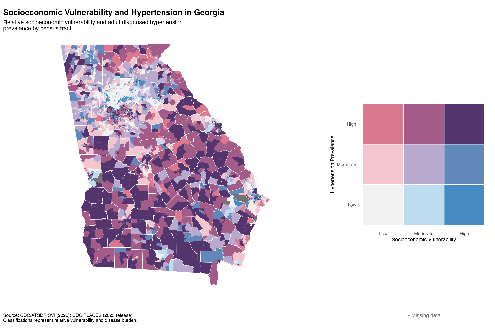
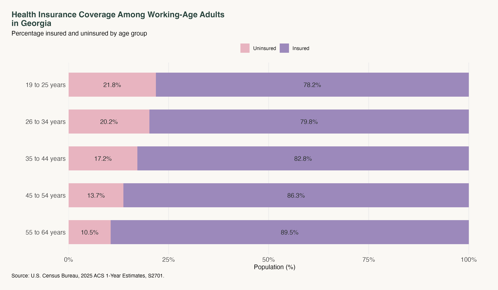

Beyond a Blood Pressure Reading
Hypertension, commonly known as high blood pressure, is a chronic cardiometabolic condition that often develops without noticeable symptoms. Left untreated or inadequately controlled, it can progressively damage the cardiovascular system and increase the risk of stroke, heart disease, and kidney disease.
While healthy lifestyle practices play an important role in prevention, early detection and long-term management also depend on access to routine medical care, blood pressure monitoring, and appropriate treatment.
48.1%
Nearly half of U.S. adults have hypertension.
Approximately 119.9 million adults nationwide.
The Conditions That Shape Health
Health extends
beyond the
individual.
The environments in which people live, work, and navigate daily influence their opportunities to maintain good health. Socioeconomic conditions, including income, education, and employment, can shape access to resources necessary for hypertension prevention and management.
Having a healthcare facility nearby does not necessarily mean that its services are accessible. Medical costs, insurance coverage, transportation, and financial circumstances can influence an individual’s ability to receive consistent care.
Broader economic pressures and changes in healthcare policy may further intensify these barriers, even within communities traditionally perceived as economically stable.
Supporting research: Chaturvedi et al. (2024); Gentili et al. (2016); Blavin & Ramos (2021); Schnake-Mahl & Sommers (2017).
Georgia in Focus
Situated within the southeastern United States’ Stroke Belt, Georgia provides an important geographic setting for examining cardiovascular health. Across its urban, suburban, and rural communities, differences in socioeconomic conditions and healthcare accessibility present important considerations for hypertension prevention and management.
As Georgia’s population and healthcare landscape continue to evolve, this community health profile provides public health practitioners, healthcare leaders, and decision-makers with an overview of socioeconomic vulnerability, hypertension prevalence, and health insurance coverage to inform community health assessments, preventive healthcare planning, and resource allocation.
Hypertension
35.7%
Adults with self-reported diagnosed hypertension
2023 BRFSS · America’s Health Rankings
Understanding Georgia’s overall health profile provides a starting point. Examining individual communities allows us to explore variation that statewide estimates alone may not capture.
Supporting research: Gentili et al. (2016); Ostchega et al. (2022); Vernon et al. (2025).
Exploring Georgia’s Communities
This bivariate choropleth map illustrates the geographic distribution of socioeconomic vulnerability and hypertension prevalence across Georgia. By comparing these two indicators at the census tract level, we can identify communities where higher or lower levels of socioeconomic vulnerability and hypertension prevalence occur together, as well as areas where these patterns differ.
Socioeconomic Vulnerability and Hypertension
Explore the map
Zoom in to explore individual communities, hover over a census tract to preview its classification, and select a tract to view detailed information on socioeconomic vulnerability, hypertension prevalence, and blood pressure medication use.
Data sources: CDC/ATSDR Social Vulnerability Index (2022) and CDC PLACES (2025 release).
Understanding the Map
The bivariate legend combines three levels of socioeconomic vulnerability with three levels of estimated hypertension prevalence, creating nine classifications.
Dark purple identifies census tracts with high levels of both indicators, while lighter gray identifies tracts with low levels of both. Pink and blue shades represent differing combinations of socioeconomic vulnerability and hypertension prevalence. Dark gray indicates missing data.

Areas of high socioeconomic vulnerability and high hypertension prevalence are particularly visible throughout central and southern Georgia. Lower levels of both indicators are more common across portions of metropolitan Atlanta, although considerable variation exists within the region.
What the Data Reveal
Geographic Patterns
Across Georgia, 531 census tracts were classified as having both high socioeconomic vulnerability and high hypertension prevalence. These communities were particularly visible throughout central and southern Georgia.
However, the geographic distribution was not uniform. Some communities with lower socioeconomic vulnerability also experienced relatively high hypertension prevalence, illustrating the complexity of chronic disease burden across different socioeconomic environments.
Beyond Insurance Coverage
Health insurance coverage provides an important, although incomplete, perspective on healthcare accessibility.

Among working-age adults in Georgia, younger adults experienced the highest uninsured rates. Approximately one in five adults aged 19–25 lacked health insurance, compared with approximately one in ten adults aged 55–64.
Insurance coverage alone, however, does not guarantee access to preventive healthcare. Out-of-pocket expenses, transportation barriers, and the availability of affordable healthcare services may influence an individual’s ability to receive routine care and manage chronic conditions.
Methods and Considerations
This descriptive community health assessment draws upon three secondary datasets:
- CDC/ATSDR Social Vulnerability Index (2022 data, released in 2024)
- CDC PLACES (2025 release; hypertension estimates based on 2023 BRFSS data)
- U.S. Census Bureau American Community Survey (2025 1-Year Estimates)
Data preparation and analysis were conducted in R. Census tract identifiers were standardized to integrate socioeconomic vulnerability rankings, estimated hypertension prevalence, and blood pressure medication use with geographic boundary data.
Socioeconomic vulnerability, represented by SVI Theme 1 (Socioeconomic Status), and estimated hypertension prevalence were classified into three relative levels and visualized using a bivariate choropleth map. Missing values were retained and distinguished visually. The insurance coverage analysis describes variation in insured and uninsured populations across working-age groups at the state level.
The datasets represent different reference periods, geographic scales, and population groups. Additionally, PLACES provides model-based prevalence estimates. Findings should therefore be interpreted as descriptive geographic and population-level patterns rather than evidence of individual-level associations or causal relationships.
Ethical considerations include protecting individual privacy through the use of publicly available, aggregated data and avoiding the stigmatization of communities. Geographic patterns are presented within the context of broader socioeconomic conditions rather than as judgments about individual health behaviors.
From Evidence to Action
Informing Public Health Practice
Understanding the geographic distribution of hypertension alongside socioeconomic vulnerability provides an opportunity for public health and healthcare leaders to evaluate existing approaches to chronic disease prevention and management.
Communities experiencing overlapping socioeconomic vulnerability and disease burden may benefit from targeted community health assessments, expanded preventive healthcare services, and partnerships with local healthcare organizations.
However, resource allocation decisions should also consider existing healthcare infrastructure, community needs, and barriers that may not be captured through geographic analyses alone.
Looking Beyond Geographic Accessibility
Community health centers, community-based organizations, and healthcare affordability initiatives represent important opportunities to address gaps in preventive healthcare access.
As healthcare systems navigate rising costs, workforce challenges, and evolving healthcare policies, maintaining accessible and sustainable preventive services remains an important public health priority.
Refining the Research
This community health profile provides a foundation for further investigation into the relationship between socioeconomic conditions, healthcare accessibility, and chronic disease burden.
Future research may benefit from examining individual-level experiences with healthcare affordability, cost-related barriers to medical care, and the availability and utilization of preventive healthcare services.
Ultimately, understanding where disease burden exists is only one part of the process. Understanding the conditions that shape opportunities for better health is equally important.